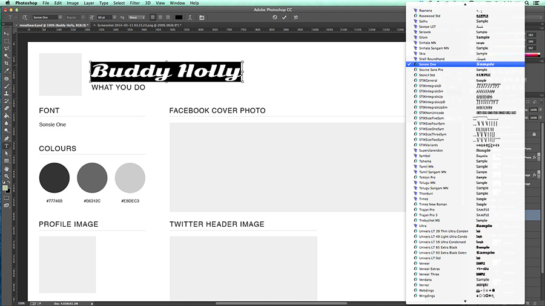
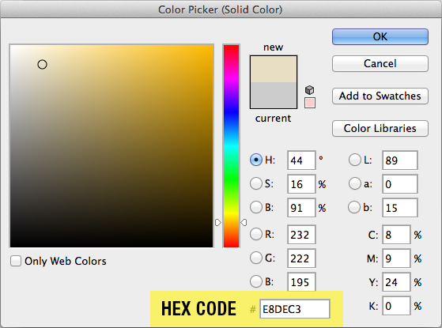
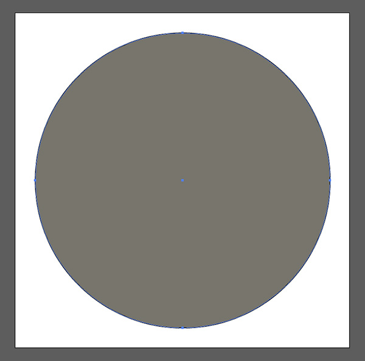
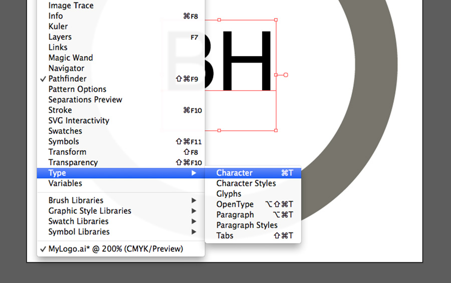

Welcome to Ladies Learning Code's
Introduction to
Photoshop & Illustrator
( Interactive code slides thanks to CoderDeck.
( Interactive code slides thanks to CoderDeck.
I'm a Registered Graphic Design at Pixel Flex.
You can find me online at pixelflex.com and on twitter - @pixelflex
Creating A Brand Package
A brand package is a collection of design assets that can be used to support your business, service or identity.
Brand is the "name, term, design, symbol, or any other feature that identifies one seller's product distinct from those of other sellers."
Brand is not just a logo or a tagline, but the entire emotional story of you or your product. We tell this story through our designs.
This means that your brand should let potential client identify key things about you.
Apple
Levi's
McDonald's
Choose three things that you'd like to communicate through your marketing materials. Some questions to help you decide:
Some example brands might be:
This is a REALLY difficult thing to do, and commonly takes a designer weeks or even months of work to complete - so don't expect to get it perfect right out of the gate.
Let's choose three words that you feel define your brand.
How the heck do I communicate these ideas in a design?
When designing, we choose design elements that can work together to communicate our brand.
Would this design work for Apple?

The goal of good design is to successfully communicate an idea to an intended audience.
What do we notice about this ad?

What do we notice about these ads?

The 3 things we'll be discussing:
Understanding design theory is valuable because it gives us a shorthand to determine where our designs are working and where they are not.
These are the components we use when creating our design.

These are what we do with the elements of our design; how we arrange them.
Colours communicate emotions and can strongly influence an audience's perception of a brand.

Colours communicate emotions and can strongly influence an audience's perception of a brand.
Fonts convey moods the same way colour, images and design do.

losttype.com

fontsquirrel.com

Spend a few minutes finding fonts you like! Be sure to ask your mentors for recommendations on fonts!

Once you have downloaded your font, you will need to find it in your downloads folder and extract it.
If you are on a PC:
Right-click the file and choose "Extract All."
If you are on a Mac
The file will likely self-extract, but if it doesn't, just double click it.
To install:
If you are on a PC:
Go to the start menu and search 'font'. Open the Font folder. Drag your newly extracted font into the font folder.
If you are on a Mac
Double click on the font-file and it will automatically install.
Feel free to keep looking for fonts!
Bonus exercise: Try visiting ifontyou.com to find a font pairing to add some complexity to your design.
Enough boring theory...


Photoshop is a very complex and powerful program that is used primarily to manipulate raster images.
For our purposes today, we'll be using it for screen graphics.
RGB colour
Low-res, 72 dpi
Raster Images
Measured in Pixels

A raster graphic is an image made of hundreds (or thousands or millions) of tiny squares of colour information, referred to as either pixels or dots. (Technically pixels refer to colour blocks viewed on an electronic monitor where as dots refer to the ink dots on a printed piece. But even professional designers, myself indluced, often use these two terms interchangeably.) - from youthedesigner.com
A vector graphic uses math to draw shapes using points, lines and curves. So whereas a raster image of a 1” x 1” square at 300 dpi will have 300 individuals pieces of information, a vector image will only contain four points, one for each corner; the computer will uses math to “connect the dots” and fill in all of the missing information. - from youthedesigner.com
The important things for us to remember today are:
Logos and fonts are best made as vectors (using Illustrator), since it allows us to resize them with losing quality.
Web graphics, especially photographs, are best made as raster images (using Photoshop), since we have more control over how they will be rendered online.)
Some things we'll do:
Choose fonts
Choose colour palette
Insert logo
Use layer styles
The first thing we need to do is choose the text tool. Navigate to our toolbar and click the 'T' icon. Your cursor will change!
Click on the text you want to edit, and start typing!
(To add your own text, click anywhere in your work area and start typing.)
To change your font, highlight your text.
You'll notice that a menu of options opens at the top of your workspace. (You can also access these options by going to Window > Character)
The first dropdown menu is where you can choose your font family. Next to that is where you can choose your font weight. Next to that, you can set your font-size.
Let's take 5 minutes to choose our fonts!
What colours support your brand?
Try visiting Adobe Kuler and Colour Lovers to find inspiration for your colour palettes.
Let's choose the exact shades we want for our colour palette, and add them to our mood board!
Start by navigating to your layers menu, and making sure all your folders are expanded.
Find the swatch layer labelled 'Colour 1', and double click the square icon in that layer.
The window that pops up is called your COLOUR PICKER. You can interact it with by dragging your mouse around the colour panels, or by setting colour values numerically.
For our purposes today, we're going to choose a colour in the panel, and make a note of its HEX CODE.
Once you've found a colour that you like, copy the HEX CODE out of its box, and then click OK.
Your colour has been applied to your mood board!
For our purposes today, we're going to choose a colour in the panel, and make a note of its HEX CODE.
Since we're going to be using our colour palette in everything we make today, we want a quick and easy way to reference it in all our Photoshop and Illustrator documents.
If we look at the layers panel, you'll find that below our first swatch, there is a text layer.
Let's edit that layer, so we can remember our hex code.
Select 2 more colours and add them to your mood board!
Bonus exercise: Try adding another swatch to your mood board, with a TEXTURE on it.
Coming up next: Photo Touchups


Spend some time working on your photos!
Bonus exercise: See if you can add your touched up photo to your moodboard! Ask your mentors for assistance.
Coming up next: Illustrator!
Now that we know a bit about design theory, and a bit about choosing fonts and colours, let's open Illustrator!

Using File > New, create a new document.

Set the specifications for the documents as follows:

Click on the rectangle icon and hold down the mouse until the sub-menu of options appears.
Choose the Elliptical tool.

Click and drag the tool to draw a circle.
*tip: To make a perfect circle, hold down the shift key while you draw.

So now we have a white circle with a black stroke around the outside. Let's give that circle a colour from our colour palette!
On the left side of the screen, you'll see the fill and stroke panel. The fill box is on the left, the stroke box is on the right. Double click on the fill box.
This will open the colour picker.

In the bottom field by the hash, enter one of the hex codes from your colour palette.
you just changed your circle's colour.
You'll notice we still have a stroke around the outside of the circle. How can we get rid of it?
Make sure the circle is selected. Go back to the fill and stroke panel, and click on the stroke icon. Then click the box with the red line through it to turn off the stroke.
If we look at our example logo, we can see that it's a ring with letters inside of it. So, our next step is to turn our circle into that ring.
Let's punch out the middle of the circle.
Click on your circle, and go to Edit > Copy.
Next, go to Edit > Paste in Front
We have just pasted an exact copy of your first circle on top of the original. Let's resize it.
Select the top circle. While holding down Shift + Alt, resize it to create the width of ring you want.
Select both the circles.
Go to window > pathfinder
What is the pathfinder?
It makes it easy to combine paths, divide objects, subtract shapes, etc.
fromt http://www.bittbox.com/illustrator/pathfinder-explained
This is what we're doing for our ring. By combining vector shapes, we ensure that our logo will maintain its integrity at any size
With our circles highlighted, choose the second icon in the shapes modes row. This is the Minus Front option. When two shapes are stacked on top of each other, it will subtract the front shape from the back shape.
This ring is what is called a 'compound shape'. You can now move it around as though it were one shape. You can also make it bigger or smaller.
Fonts in Illustrator work very similarly to fonts in Photoshop. Start by selecting the text tool.

Just as in Photoshop, click on the artboard and type in your initials.
To choose a font, you can use either the character menu that appears at the top of the artboard, or you can open the Character Window by going to Window > Type > Character.
You can adjust the font's size, type and colour just as you did in Photoshop.
Once you're satisfied with your font, you need to extract it. By extracting it, you ensure that it will look the same to everyone, even people who don't have your selected font on their computer.
To extract your text, right click on it and choose 'Create Outline'. Your text should changes, and now be surrounded by dots called anchors.
Extracting the text converts it to a vector image. It's no longer editable as text, but it can be resized like a graphic.
Go to File > Save As.
Save your file as an .ai.In Illustrator, go to Edit > Select All (or use Ctl + A) and copy your logo, Edit > Copy (or use Ctl + C)
Return to Photoshop. Go to edit > Paste (or Ctl + V). You'll see a paste menu with four options.
Choose "Smart Object". Click OK.
"Smart Objects are layers that contain image data from raster or vector images, such as Photoshop or Illustrator files. Smart Objects preserve an image’s source content with all its original characteristics, enabling you to perform nondestructive editing to the layer."
This is how your smart object will look once you paste it in. Let's scale it and it move it around on our page so it fits the moodboard.
When we change the scale, perspective, or rotation of an item in Photoshop or Illustrator, that's called 'Transforming it.'
To change these attributes, go to Edit > Transform > Scale. You can grab one of the corners of your logo, click and drag it, and it will resize. To keep the object's aspect ratio, hold down the shift key while you click and drag.
When you are satisfied with how your logo looks on the moodboard, hit enter to accept your changed, and then save the moodboard file.
Congratulations! What you have here are a series of assets, which you'll be able to use in our next project - a business card!
Open your template business card.

Things to remember:
Using your moodboard, design a business card consistent with your brand! There's a package of additional graphics that you can use. Be sure to ask your mentors for assistance!
Bonus challenge: try to change some of those colours in the provided graphics like we did with your logo in illustrator. Paste in some of those graphics as smart objects, like we did in photoshop.Using the techniques we learned today, let's put into practical use.
Using File > Open
Select a photo you want to be you the main cover photo (ie: buddyholly-facebook-cover.jpg)
Select the Crop Tool
In the Crop Tool Options select "W x H x Resolution" from the drop-down menu and fill out the dimension to the following.
Re-adjust the selected image area by click and dragging the image, press enter to Crop.

Let's go ahead and add a Layer Style Effect to this cover image.
Double click to unlock the Background image in the Layers Palette, click OK
Go to File > Save for Web...
Save your file as a .jpgUsing the steps to create our Facebook Cover Photo we can now make a Twitter Header Image with the following dimensions.